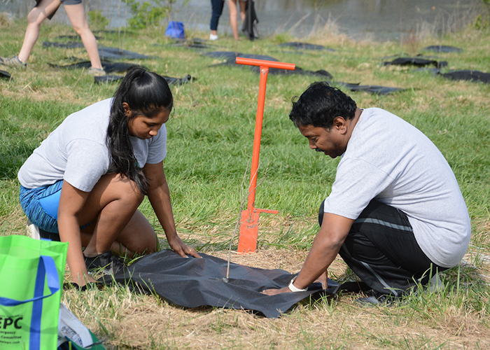

This map visualizes forest canopy changes across U.S. counties, providing valuable insights for local environmental organizations like Reforest the Bluegrass, The Urban Forest Initiative, and Trees Lexington to measure their efforts and identify trends in canopy growth within their jurisdictions. Similar organizations across the nation can use this map to assess the effectiveness of their conservation or forestry initiatives, making it a versatile resource for supporting sustainable urban development.
Use the slider to select a year between 2001-2021. The map will update to show forest cover for that year. The data is collected from DATABASE and is collected every five years. The data also combines deciduous, evergreen, mixed forest types.
Hover over or click on a county to view the percentage of forest cover for the selected year.
Data from Environmental Public Health Tracking